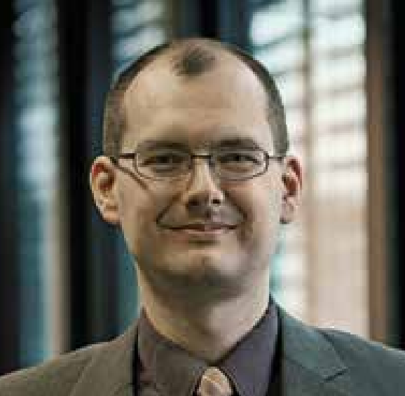

Lehr- und Forschungsgebiete
Meine Interessen liegen auf dem Gebiet der Informatik. Im Fokus stehen dabei die folgenden Themengebiete:
- IT-Sicherheit
- Kryptographie
- Hashfunktionen
- Passworthashing
- Message Authentication Codes
- Protokolle zur sicheren Kommunikation
- Symmetrische Verschlüsselungsverfahren
- Verfahren zur authentisierten Verschlüsselung
- Programmieren
- Algorithmen und Datenstrukturen
- Betriebssysteme (insbesondere GNU/Linux)
Forschung und Publikationen
Ich habe an den folgenden internationalen Wettbewerben teilgenommen.- SHA-3 Competition mit Twister (1. Runde)
- Password Hashing Competition mit Catena (Finale)
- CAESAR: Competition for Authenticated Encryption: Security, Applicability, and Robustness mit POET (2. Runde)
Meine Vorlesungen an der BHT
- Computerarchitektur und Betriebssysteme
- Algorithmen und Datenstrukturen
- Sicherheit digitaler Systeme
- Vertiefung Echtzeitsysteme
- Theoretische Informatik
- Systemprogrammierung
- Netzwerksicherheit
- Echtzeitsysteme
- IT-Sicherheit
Mein Labor
Ich bin Mitglied des Pervasive Systems Engineering Labors (PSE-Labor). Mehr Informationen gibt es hier.Kontakt
Prof. Dr. Christian Forler
Telefon: (030) 4504 - 2687
E-Mail: cforler [at] bht-berlin.de
Büro: Haus Bauwesen, Raum D134
Adresse:
Berliner Hochschule für Technik
Fachbereich VI - Informatik und Medien
Luxemburger Str. 10
13353 Berlin
Sprechzeiten:
Bitte vereinbaren Sie einen Termin per E-Mail.